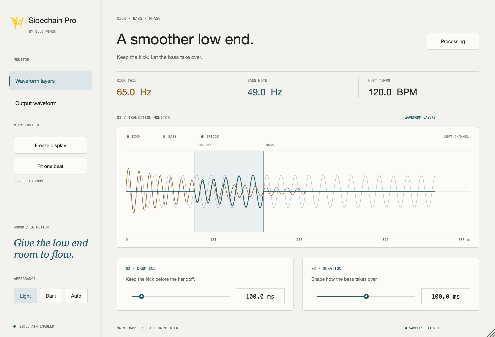
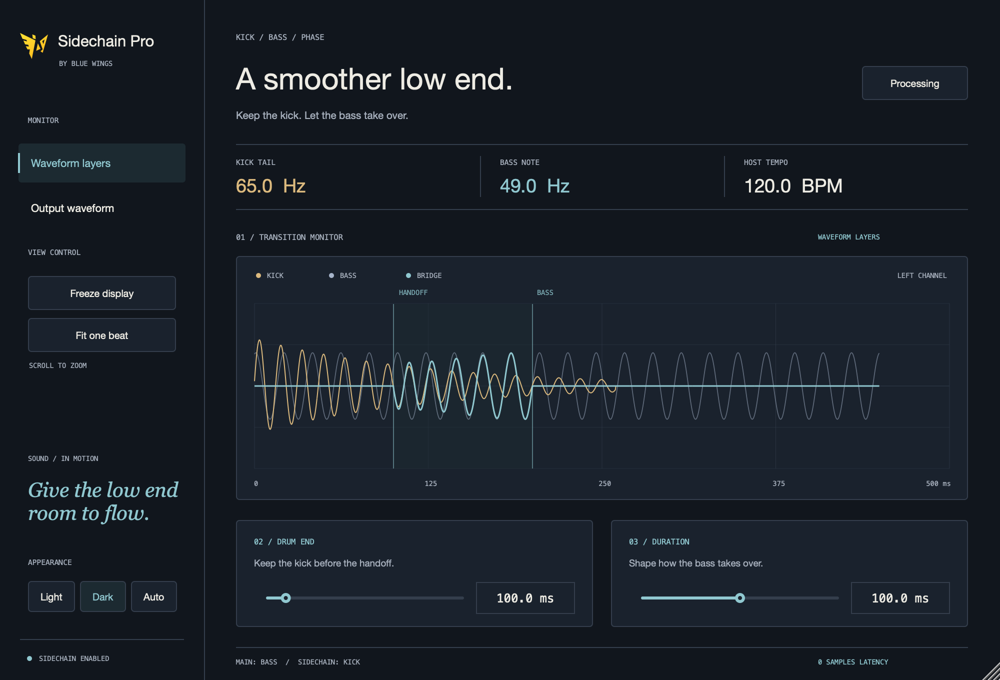
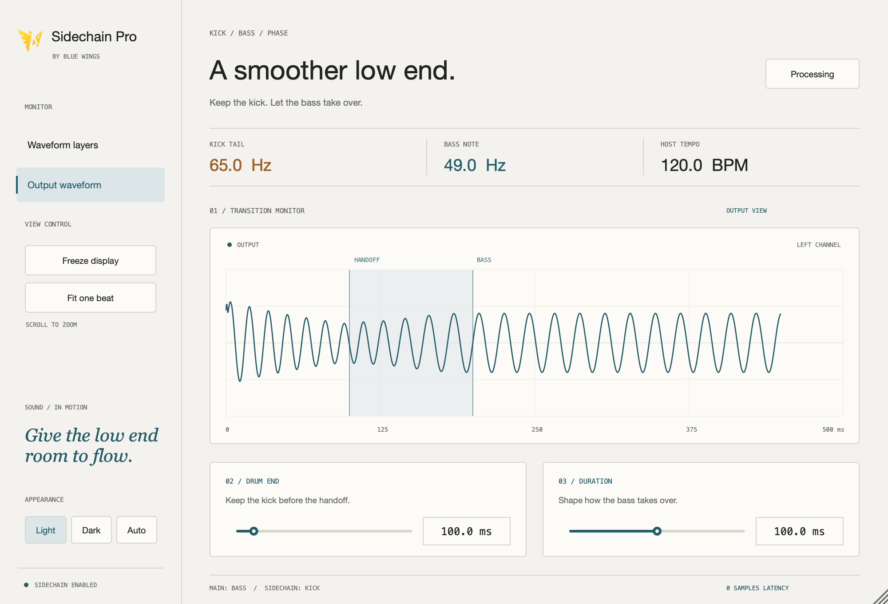

关注相位的连接
结合连接处的 kick 尾音与当前 bass，生成低频桥梁，在两端平滑接回原始波形。
04 / LOW-END FLOW开发预览 / macOS AU + VST3
A CLOSER LOOK



SHAPE THE HANDOFF
让控制贴近音乐本身：
kick 在哪里结束，bass 怎样接入。
结合连接处的 kick 尾音与当前 bass，生成低频桥梁，在两端平滑接回原始波形。
在 bass 输出被压低时，持续分析原始输入。无需额外音频预读，但换音后的音高检测仍需要稳定时间。
Drum End 决定 kick 保留多久，Duration 控制过渡时长。直接输入毫秒、拖动滑杆，或双击恢复默认值。
对照 kick、bass 与桥梁图层，或单独查看输出。冻结显示、滚轮缩放，也可适配宿主的一拍；监视器显示左声道或单声道。
纸色背景、克制的青色与清晰的工作区，延续 Atmos Check 的视觉语言。浅色、深色和自动外观随工程保存。
主要面向 25–200 Hz 的单音低频。音高或相位判断不可靠时，平滑回退到交叉淡化；复杂素材仍需要试听确认。
FROM ROUTING TO RHYTHM
从 kick 的尾音和持续的 bass 开始，在音乐语境中调整连接，再用最终输出检查整首歌的律动。
将插件放在 bass 轨道，把 kick 送入侧链输入。插件输出包含 kick，使用这套接线时，避免将同一条 kick 同时直接送入主混音而重复叠加。
通过 Drum End 保留想要的 kick 部分，边听边调整 Duration，并结合波形中的高亮区域确认过渡位置。
切换输出视图，与旁路进行对比。当前为开发预览，请用自己的 kick、bass 和监听环境判断结果。
下一个项目 / 声音塑形